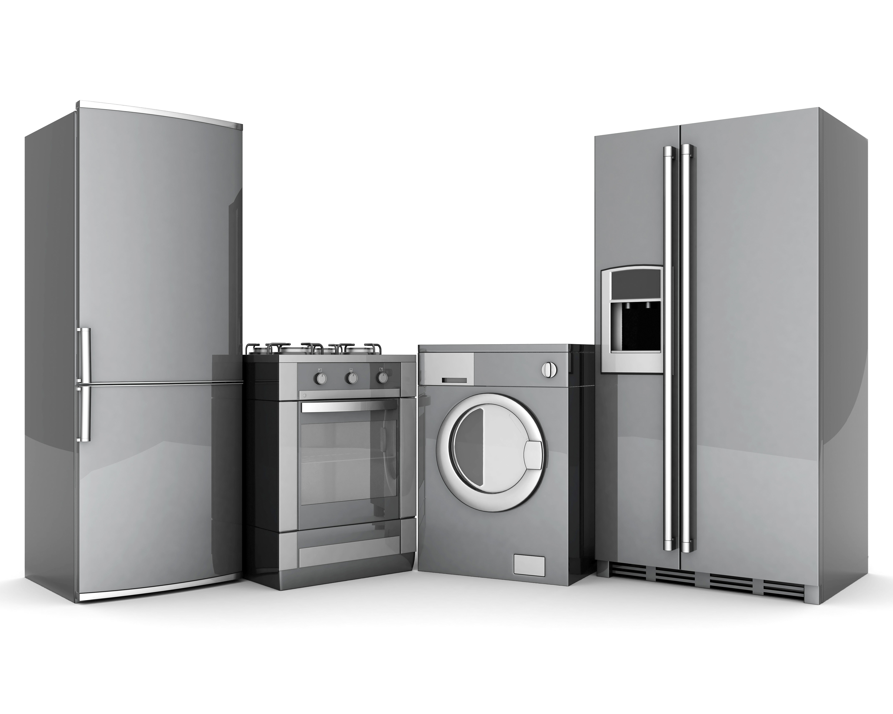

Buitinė technika | Kokybiška buitinė technika Jūsų namams | PREKA.lt
 Registruotis Prisijungimas Prisijungimas Palyginti prekes (0) Prekių krepšelis Krepšelis tuščias. Viso prekių už 0 00 € Peržiūrėti krepšelįTurite klausimų? +37060174874 Susisiekime arba info@preka.lt
Stelažai Stelažai Priedai Buitiniai stelažai Buitinė technika Įmontuojama technika Laisvai pastatoma technika Smulki buitinė technika Virtuvės reikmenys Siuvimo mašinos Valymo įranga Kavos aparatai Buitinė chemija Televizoriai LED televizoriai Stelažai Stelažai Priedai Buitiniai stelažai Buitinė technika Įmontuojama technika Laisvai pastatoma technika Smulki buitinė technika Virtuvės reikmenys Siuvimo mašinos Valymo įranga Kavos aparatai Buitinė chemija Televizoriai LED televizoriai Pradžia /Privatumo politika
Prekių gavėjo duomenys, bus naudojami tik užsakymui vykdyti. Pirkdami sutinkate, kad www.preka.lt naudos Jūsų pateiktus duomenis užsakymo vykdymo tikslais. Duomenų saugumas garantuojamas.
Buitinė technika
Įmontuojama technika Laisvai pastatoma technika Smulki buitinė technika Virtuvės reikmenys Siuvimo mašinos Valymo įranga Kavos aparatai Buitinė chemijaPrekių filtras
Valyti Prekės ženklas Valyti CATA Snaigė Kenwood Liebherr AEG Rubina Jaguar Janome Juki Candy Whirlpool Samsung Gorenje Elica Bosch Siemens Electrolux Gręžimo greitis – apsisukimų skaičius Valyti 1400 1600 1300 1200 Indaplovės panelė Valyti Valdymas priekyje Valdymas ant briaunos Orkaitės ypatumai Valyti Pirolizė Katalitinės sienelės Išsivalančios sienelės (EKO Clean) Spalva Valyti Metalo Balta Juoda Gelsva Šaldytuvo sistema Valyti No-frost 0 zona No-frost + 0 zona Gylis Valyti 60 cm 55 cm Kaitelntės pagrindas Valyti Metalo pagrindas Stiklo pagrintas Stiklokeraminis pagrindas Energijos klasė Valyti A A+ A++ A+++ A+++++ Įmontuojamo gartraukio tipas Valyti Teleskopinis Neteleskopinis Šaldytuvo tipas Valyti Su šaldikliu apačioje Su šaldikliu viršuje Su šaldymo kamera Be šaldiklio Skalbimo mašinos tipas Valyti Iš priekio pakraunama Iš viršaus pakraunama Kaitlentės tipas Valyti Dujinė Elektrinė Indukcinė Mišri Plotis Valyti 45 cm 50 cm 55 cm 58 cm 60 cm 68 cm 70 cm 73 cm 80 cm 90 cm 100 cm Gatraukio tipas Valyti Montuojami į spintelę Tvirtinamas prie sienos Tvirtinamas prie lubųPrivatumo politika
Prekių gavėjo duomenys, bus naudojami tik užsakymui vykdyti. Pirkdami sutinkate, kad www.preka.lt naudos Jūsų pateiktus duomenis užsakymo vykdymo tikslais. Duomenų saugumas garantuojamas.
Prekiniai ženklai
AEG Electrolux Siemens Bosch Elica Gorenje Teka Miele Samsung Philips Panasonic Whirlpool Jaguar Veritas Janome Juki Zelmer Delonghi Bergner Candy Karcher LG Metalsistem Fairy Fagor Tefal InSink Erator Dyson Sony Gratus Liebherr Atlant Indesit Haier Kenwood Toshiba Pioneer Snaigė CATA Hoover Candy Smeg WOLF BaxiPagalba
Pirkimo sąlygos Prekių pristatymas Apmokėjimas už prekes Privatumo politika Kokybės garantija Pirk išsimokėtinai Aplinkosauga Stipriausi Lietuvoje Neteisminis ginčo sprendimas Pratęstos garantijos sąlygosBuitinė technika
Siūlome platų, kokybiškos buitinės technikos pasirinkimą
Prekiaujame smulkia ir stambia buitine technika bei elektronika Jūsų namams: skalbimo mašinos , džiovyklės , indaplovės , kaitlentės , orkaitės , šaldytuvai , gartraukiai ir kita buitine technika. Parduodama buitinė technika pasižymi pažangiais sprendimais, paprastu naudojimu bei nedidelėmis energijos sąnaudomis (didžioji dauguma prietaisų priskiriami A energijos klasei).
Žinomų gamintojų buitinė technika už nedidelę kainą
Mūsų kataloge – AEG, Zanussi, Electrolux, Atlant, Siemens, Miele, Bosch ir kitų žinomų gamintojų buitinė technika. Parduodamą buitinę techniką galite rinktis pagal norimus techninius parametrus, dizainą. Didelis skirtingos buitinės technikos modelių pasirinkimas leis išsirinkti tinkamiausią sprendimą Jūsų namams. Formuojame parduotuvės asortimentą taip, kad galėtume patenkinti skirtingus Jūsų poreikius.
Jei nesate tikri, kokia buitinė technika Jums geriausiai tiktų – susisiekite su mumis. Supažindinsime su modelių privalumais ir jų skirtumais, patarsime ką geriausia pasirinkti.
Daugumai buitinės technikos įrangai suteikiame 24 mėn. garantiją.
1 - 24 iš 748 Gartraukiai Elica LANE IX/A/52 220 00 € Į palyginimą Iš palyginimo Palyginti (0) Kaitlentės Bosch PUE631BB2E 294 00 € Į palyginimą Iš palyginimo Palyginti (0) Gartraukiai ELICA ERA C IX/A/52 85 00 € Į palyginimą Iš palyginimo Palyginti (0) Šaldytuvas Bosch KUL15AFF0 420 00 € Į palyginimą Iš palyginimo Palyginti (0) Šaldikliai Bosch GSN36AIDP 940 00 € Į palyginimą Iš palyginimo Palyginti (0) Šaldikliai Bosch GSN58AWDP 890 00 € Į palyginimą Iš palyginimo Palyginti (0) Šaldkliai Bosch GTV15NWEA 212 00 € Į palyginimą Iš palyginimo Palyginti (0) Indaplovės AEG FSK93807P 1075 00 € Į palyginimą Iš palyginimo Palyginti (0) Indaplovės AEG FSK83717P 709 00 € Į palyginimą Iš palyginimo Palyginti (0) Skalbimo mašina Bosch WAT323L7SN 579 00 € Į palyginimą Iš palyginimo Palyginti (0) Skalbimo mašina Bosch WAXH2E0LSN 1248 00 € Į palyginimą Iš palyginimo Palyginti (0) Skalbimo mašina Bosch WAXH2KOLSN 1070 00 € Į palyginimą Iš palyginimo Palyginti (0) Skalbimo mašina Bosch WAXH2KB0SN 1060 00 € Į palyginimą Iš palyginimo Palyginti (0) Skalbimo mašina Bosch WAX32MA9SN 895 00 € Į palyginimą Iš palyginimo Palyginti (0) Indaplovės Bosch SMI4HAS48E 565 00 € Į palyginimą Iš palyginimo Palyginti (0) Indaplovės Bosch SMI6ECS93E 850 00 € Į palyginimą Iš palyginimo Palyginti (0) Indaplovės Bosch SMS25AI03E 355 00 € Į palyginimą Iš palyginimo Palyginti (0) Indaplovės Bosch SMS46LI00E 400 00 € Į palyginimą Iš palyginimo Palyginti (0) Indaplovės Bosch SMS88UI36E 875 00 € Į palyginimą Iš palyginimo Palyginti (0) Indaplovės Bosch SMU46GS01E 420 00 € Į palyginimą Iš palyginimo Palyginti (0) Indaplovės Bosch SPS2IKI04E 425 00 € Į palyginimą Iš palyginimo Palyginti (0) Indaplovės Bosch SPS4EMI28E 490 00 € Į palyginimą Iš palyginimo Palyginti (0) Indaplovės Bosch SPU4EMI28S 565 00 € Į palyginimą Iš palyginimo Palyginti (0) Indaplovės Bosch SPU6ZMW10S 699 00 € Į palyginimą Iš palyginimo Palyginti (0) 1 2 3 UAB INTERPREKA INTERPREKA. Kodas: 301693681. PVM mokėtojo kodas: LT100004047718. Žemynos 39, LT-47102, Kaunas. Telefonas: +370 601 74874. Sąskaitos nr.: LT503500010003118750, Paysera LT. Banko kodas: 35000, SWIFT: EVIULT21XXX. © 2020 INTERPREKA. Be INTERPREKA sutikimo draudžiama kopijuoti ir platinti svetainėje esančią informaciją. Elektroninių parduotuvių kūrimas verskis.lt